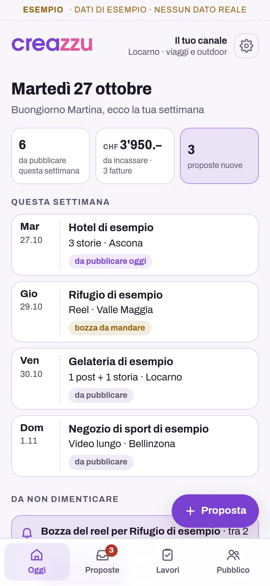
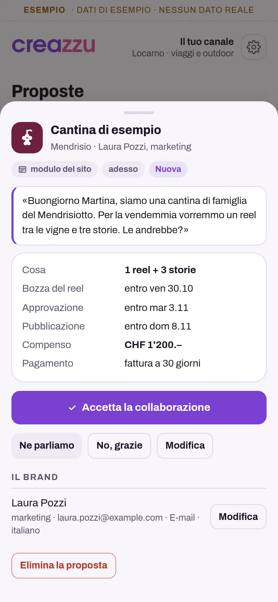
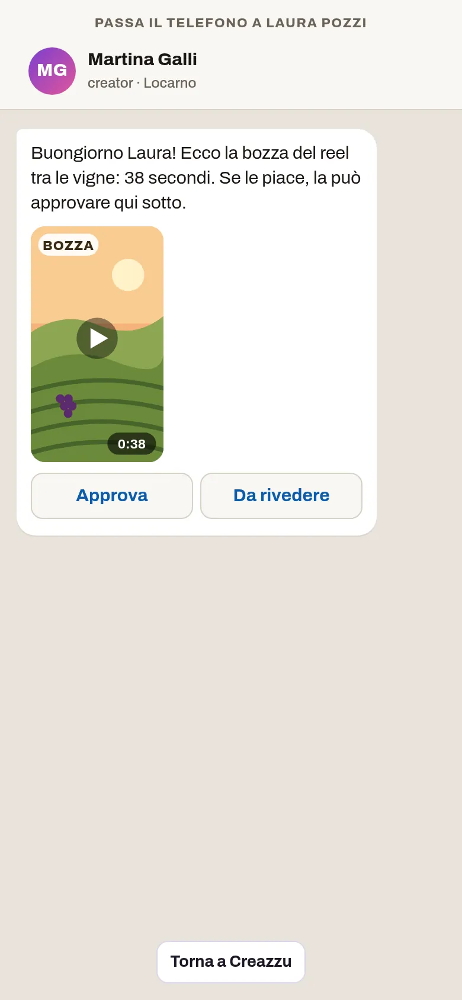
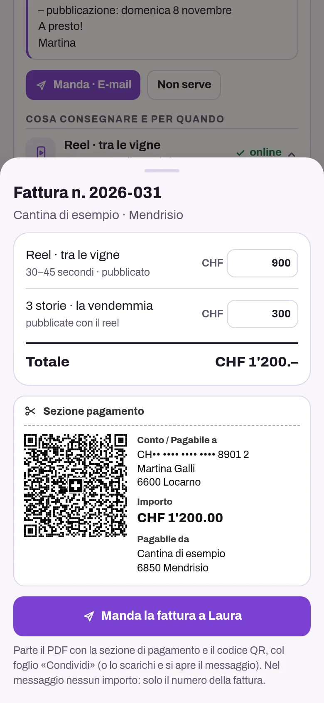
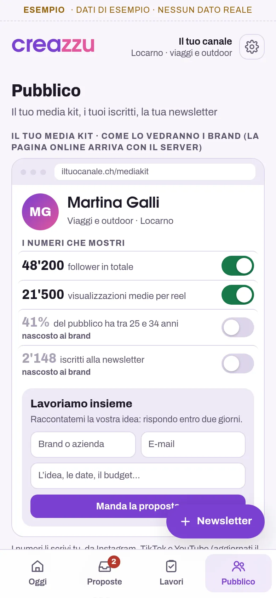

Per influencer e creator
Il gestionale per chi crea contenuti
La tua settimana, le proposte dei brand in un posto, cosa consegnare e per quando, la bozza da far approvare, la fattura QR e chi ha pagato, il tuo media kit e i tuoi iscritti. Da USD 3.99 al mese.
Si usa dal browser e si installa con un'icona, senza App Store.

Guardalo in azione
Meno di due minuti nella settimana di una creator, dalle proposte dei brand alla newsletter.
Demo con dati inventati. Nel video si vedono anche cose che arriveranno presto: il media kit online con il modulo per i brand, le proposte e le iscrizioni che arrivano da sole dal tuo sito, la bozza approvata dal brand con un tocco dal suo telefono, il promemoria e la newsletter che partono da soli e i pagamenti segnati da soli, dalla banca.
Che cosa fa
Tutto quello che oggi sta nelle e-mail, nei messaggi, in un foglio di calcolo e nella tua testa, in un posto solo.
La tua settimana
Ogni mattina vedi cosa pubblicare, per quale brand e quando, quanto devi ancora incassare e le proposte nuove. E cosa non dimenticare: la bozza da mandare, l'approvazione da ricordare, le fatture in ritardo.
Le proposte in un posto
Ogni proposta che ti arriva, per e-mail, con un messaggio o dal modulo del tuo sito, la registri in due minuti: chi, cosa chiede, le date e il compenso. L'accetti con un tocco, o rispondi «Ne parliamo» o «No, grazie» nella lingua del brand.
Presto: le proposte che arrivano da soleCosa consegnare e per quando
Accettata la proposta, ogni contenuto ha le sue date: bozza, approvazione e pubblicazione. Creazzu te le ricorda nella schermata «Oggi», due giorni prima e, se vuoi, le metti nel calendario del telefono, con l'avviso. E ti ricorda di rendere riconoscibile la pubblicità.
Presto: il promemoria al brand che parte da soloLa bozza approvata
Scegli il video o la foto dalla galleria e lo mandi al brand, con il messaggio nella sua lingua. Se è lì con te, gli passi il telefono: la vede e la approva con un tocco.
Presto: il brand la approva dal suo telefonoFattura QR e solleciti
Pubblicato il contenuto, la fattura con la sezione di pagamento QR svizzera è pronta in un minuto, in PDF nella lingua del brand. Segni chi ha pagato e, a chi è in ritardo, mandi un sollecito gentile, senza importi nel messaggio.
Media kit, iscritti e newsletter
Il media kit in PDF, in cinque lingue, con i numeri che scegli di mostrare. Gli iscritti alla newsletter li aggiungi solo con il loro sì e gli indirizzi restano tuoi: li scarichi quando vuoi; la newsletter la mandi dal tuo indirizzo e-mail, a gruppi, con la riga per non riceverla più.
Presto: il media kit online, le iscrizioni dal tuo sito e la newsletter che parte da sola



Schermate con dati di esempio.
Si installa senza App Store
Creazzu è un'app web: si apre dal browser e resta sul telefono con la sua icona, come le altre.
Apri creazzu.web.app con Safari, tocca Condividi e poi «Aggiungi alla schermata Home».
Apri creazzu.web.app con Chrome, tocca il menu ⋮ e poi «Installa app».
Con Chrome o Edge si installa dall'icona nella barra degli indirizzi. Funziona anche solo nel browser.
Prezzo
Un prezzo, tutta l'app
USD 3.99
al mese
USD 14.99
ogni 6 mesi
USD 24.99
all'anno
USD 74.99
una volta sola
Prezzi in dollari USA. Per ora Creazzu si acquista scrivendo a info@utoapps.ch: ti mandiamo il codice appena ricevuto il pagamento. Presto, con il pagamento online, i piani che si rinnovano avranno un mese di prova gratis, la prima volta che ti abboni (serve una carta).
Si apre con il tuo codice
Lo ricevi quando acquisti l'app. Proposte, collaborazioni, bozze, fatture QR, media kit e newsletter, senza limiti. I dati restano nel telefono.
Installala sulla schermata Home e scarica una copia ogni tanto (Impostazioni): in Safari, senza installarla, i dati si possono perdere.
Te la installiamo noi
La installiamo sul tuo telefono con i dati del tuo canale, il media kit, l'IBAN per la fattura QR e, se vuoi, i tuoi brand e i tuoi iscritti, e ti mostriamo come si usa. Il codice a vita è compreso.
CHF 290
una volta sola
La vuoi con il tuo logo?
Creazzu esiste in versione standard, così com'è, oppure su misura, con il tuo logo, i tuoi colori e le modifiche che ti servono. Per la versione su misura scrivi a info@utoapps.ch.